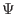
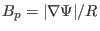

Define the magnetic surface average of a physical quantiy by
where the volume integration is over the small volume between two adjacent
flux surfaces with  difference being
. The differential
volume element is given by
,
where
 is the Jacobian of
is the Jacobian of
 coordinates.
Using this, equation (207) is written as
coordinates.
Using this, equation (207) is written as
|
 |
|
|
| |
|
|
(208) |
which is an averaging over a magnetic surface and thus is called magnetic
surface averaging. Sometimes, we do not want the Jacobian explicitly to appear
in the formula. This can be achived by writing the differential volume element
as
Using
, the volume element is further written as
Using this, the averaging defined in Eq. (207) is written as
|
|
|
|
| |
|
|
(211) |
If is axisymmetric, then the above equation is written as
(Equation (212) is used in the GTAW code to calculate the magnetic
surface averaging.) Using Eq. (188) and
,
equation (212) can also be written as
Noting that the Jacobian does not change sign, the above equation is written
as
Using the expression of the volume element
 , the volume within a magnetic surface is written
, the volume within a magnetic surface is written
Using this, the differential of with respect to  is written as
is written as
Using this, Eq. (213) is written as
yj
2018-03-09